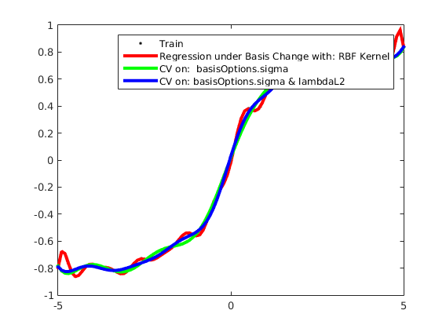

Contents
Description
Demonstrates usage of kernalized regression based on minimizing the L2 norm of the errors
clear all close all generateData_sigmoid
usage of RBF kernelized L2 regression
options_kn = []; options_kn.lambdaL2 = 8; options_kn.basisFunc = @ml_kernel_rbf; options_kn.basisOptions.sigma = 0.5; options_kn.subModel = @ml_regression_L2; options_kn.subOptions.addBias = 1; model_kn = ml_regression_basis(Xtrain, ytrain, options_kn); yhat_kn = model_kn.predict(model_kn, Xtest); testError_kn = mean(abs(yhat_kn - ytest)); fprintf('Averaged absolute test error with %s is: %.3f\n', ... model_kn.name, testError_kn);
Averaged absolute test error with Regression under Basis Change with: RBF Kernel is: 0.042
usage of RBF kernelized L2 regression with CV on sigma
options_cv1 = []; options_cv1.lambdaL2 = 8; options_cv1.subModel = @ml_regression_basis; options_cv1.subOptions.subModel = @ml_regression_L2; options_cv1.subOptions.basisFunc = @ml_kernel_rbf; options_cv1.subOptions.subOptions.addBias = 1; options_cv1.paramNames = 'basisOptions.sigma'; options_cv1.paramValues = [0.5 1 1.5 2 2.5]'; options_cv1.nParams = 1; options_cv1.loss = 'sq'; model_cv1 = ml_general_CV(Xtrain, ytrain, options_cv1); yhat_cv1 = model_cv1.predict(model_cv1, Xtest); testError_cv1 = mean(abs(yhat_cv1 - ytest)); fprintf('Averaged absolute test error with %s is: %.3f\n', ... model_cv1.name, testError_cv1); fprintf('Best %s is: %.3f\n', options_cv1.paramNames, ... model_cv1.bestParams);
Averaged absolute test error with CV on: basisOptions.sigma is: 0.032 Best basisOptions.sigma is: 1.500
usage of RBF kernelized L2 regression with CV on sigma and lambda (L2 regularizer)
options_cv2 = [];
options_cv2.subModel = @ml_regression_basis;
options_cv2.subOptions.subModel = @ml_regression_L2;
options_cv2.subOptions.basisFunc = @ml_kernel_rbf;
options_cv2.subOptions.subOptions.addBias = 1;
options_cv2.paramNames = {'basisOptions.sigma', 'lambdaL2'};
options_cv2.paramValues = {[0.5 1 1.5 2 2.5]', [0.5 1 1.5 2 2.5]'};
options_cv2.nParams = 2;
options_cv2.loss = 'sq';
model_cv2 = ml_general_CV(Xtrain, ytrain, options_cv2);
yhat_cv2 = model_cv2.predict(model_cv2, Xtest);
testError_cv2 = mean(abs(yhat_cv2 - ytest));
fprintf('Averaged absolute test error with %s is: %.3f\n', ...
model_cv2.name, testError_cv2);
fprintf('Best %s is: %.3f\n', options_cv2.paramNames{1}, ...
model_cv2.bestParams(1));
fprintf('Best %s is: %.3f\n', options_cv2.paramNames{2}, ...
model_cv2.bestParams(2));
Averaged absolute test error with CV on: basisOptions.sigma & lambdaL2 is: 0.031 Best basisOptions.sigma is: 1.000 Best lambdaL2 is: 1.500
plotRegression1D(Xtrain, ytrain, model_kn, model_cv1, model_cv2);